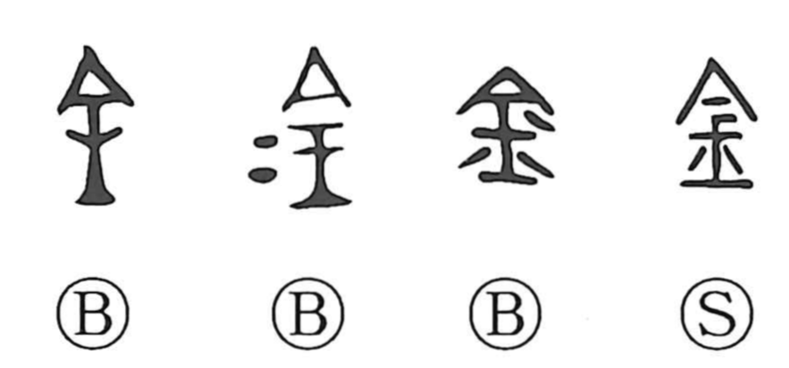

金

Kun: kane, kana, kogane | On: kin, kon
gold ・ metal ・ money
Explanation
金 pictures metal cast into a shaped mass. The outline is compared with the cross-section of a rail, while the small marks beside it indicate separate lumps of cast copper. The added marks identify the material as metal.
The early word refers broadly to metal, especially copper, from which bronze ritual vessels were made. It later also names gold, then money and wealth. Its meaning is consequently wider than the yellow precious metal alone.
As a component, 金 identifies a large family of words for metals and the objects worked from them: vessels, weapons, tools, and other implements. The variety develops from the many uses of the cast material represented in the original shape.